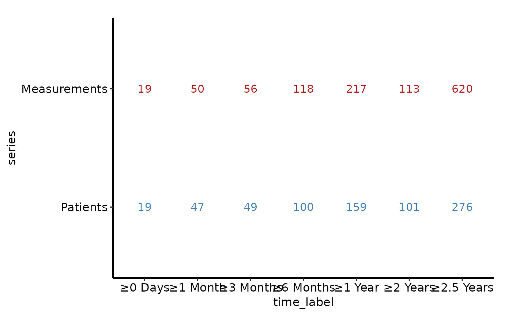

Longitudinal Participation Counts Table Panel
Source:R/longitudinal-counts-plot.R
longitudinal_counts_table.RdProduces a numeric data table rendered as a ggplot text panel, intended to
be composed below longitudinal_counts_plot() via patchwork.
Usage
longitudinal_counts_table(
data,
x_col = "time_label",
count_col = "count",
group_col = "series",
label_format = NULL
)Arguments
- data
Long-format data frame. See
sample_longitudinal_counts_data().- x_col
Name of the discrete time-label column. Default
"time_label".- count_col
Name of the numeric count column. Default
"count".- group_col
Name of the series grouping column. Default
"series".- label_format
Formatting function applied to count values.
NULL(default) auto-selects: uses scales::comma when thescalespackage is installed, otherwise falls back to base::as.character. Passidentityto display counts with no formatting.
Value
A bare ggplot2::ggplot() object (text table panel).
Examples
library(ggplot2)
dta <- sample_longitudinal_counts_data(n_patients = 300, seed = 42L)
longitudinal_counts_table(dta) +
scale_colour_manual(
values = c(Patients = "steelblue", Measurements = "firebrick"),
guide = "none"
) +
hvti_theme("manuscript")
